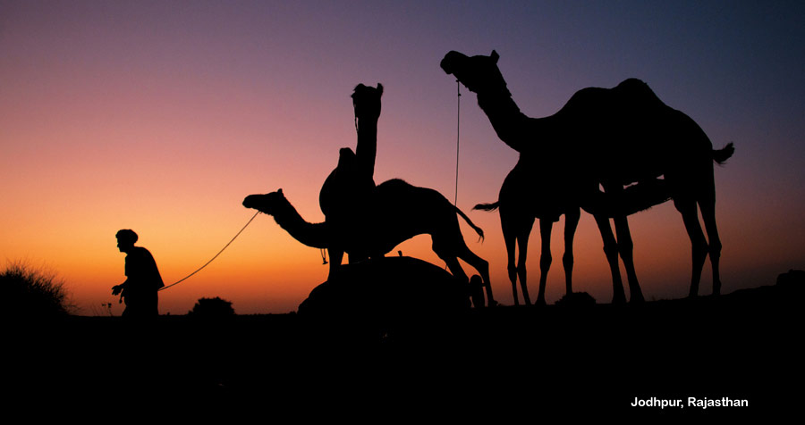
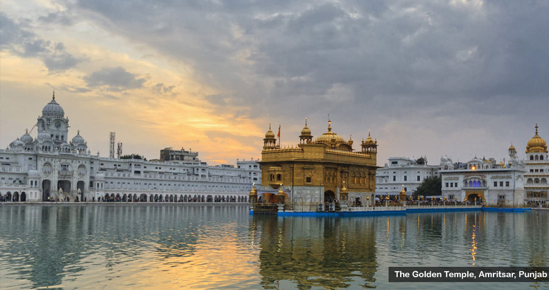
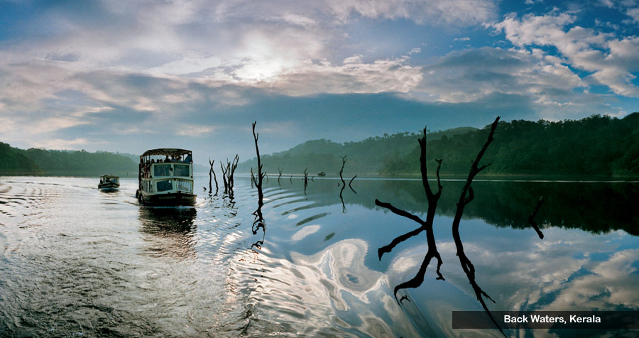
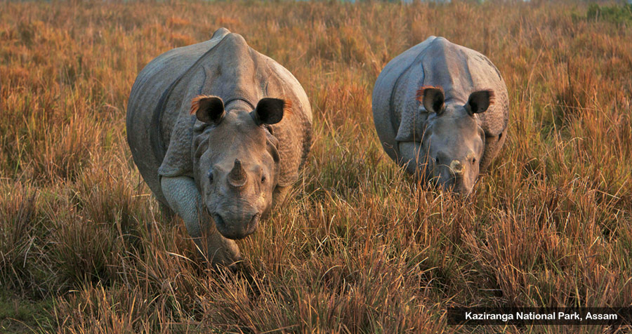
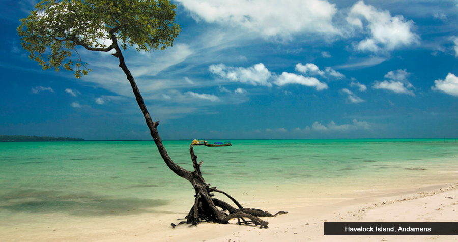
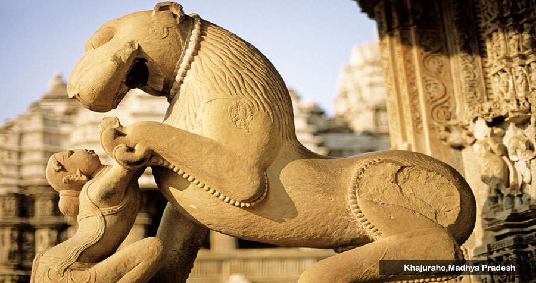
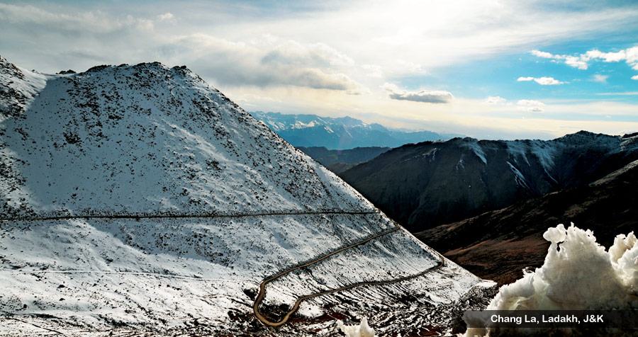
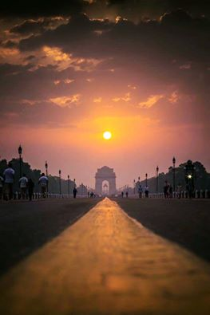

Gallery//Namastey India

JodhPur, Rajasthan
Jodhpur "The Sun City" was founded by Rao Jodha, a chief of the Rathore clan, in 1459. It is named after him only. Jodhpur in Rajasthan, India was previously known as Marwar. Jodhpur is the second largest city in Rajasthan. It is divided into two parts - the old city and the new city. The old city is separated by a10 km long wall surrounding it. Also it has eight Gates leading out of it. The new city is outside the walled city.

The Golden Temple,Amritsar
The Golden Temple, located in the city of Amritsar in the state of Punjab,is a place of great beauty and sublime peacefulness. Originally a small lake in the midst of a quiet forest, the site has been a meditation retreat for wandering mendicants and sages since deep antiquity.

The Back Waters,Kerala
The Kerala backwaters are a chain of brackish lagoons and lakes lying parallel to the Arabian Sea coast (known as the Malabar Coast) of Kerala state in southern India. The network includes five large lakes linked by canals, both manmade and natural, fed by 38 rivers, and extending virtually half the length of Kerala state. The backwaters were formed by the action of waves and shore currents creating low barrier islands across the mouths of the many rivers flowing down from the Western Ghats range.
Singalila National Park
Singalila National Park or The Sandakhphu Trek as popularly know, ranges from 200mts to 3600mts. The habitat varies from bamboos, oaks, to rhododendron. The trek which starts from Manebhanjan is a spectacular birding trail, which can be covered in 3-5 days.

Kaziranga National Park
Kaziranga National Park – a world heritage site, the park hosts two-thirds of the world’s Great One-horned rhinoceros. Kaziranga also boasts the highest density of tigers among the protected areas in the world and was declared a Tiger Reserve in 2006. Though sighting of tigers are difficult because of the tall grasses that provide excellent camouflage, their presence can be felt everywhere by way of pug marks, kills and territorial markings. The park is home to large breeding populations of elephants, wild water buffalo and swamp deer. "Kaziranga excites the senses, arrests the soul. It beckons a visit"

Peacock island,Andaman
Scleractinian Corals of Peacock Island Wildlife Sanctuary of Andaman and Nicobar Islands, India words: Scleractinian Corals Vulnerable Peacock Island and aman and Nicobar Islands INTRODUCTION paper describes the total scleractinian species
Ellora Caves, Maharashtra
The Ellora caves, locally known as ‘Verul Leni’ is located on the Aurangabad-Chalisgaon road at a distance of 30 km north-northwest of Aurangabad, the district headquarters. The name Ellora itself inspires everyone as it represents one of the largest rock-hewn monastic-temple complexes in the entire world. Ellora is also world famous for the largest single monolithic excavation in the world, the great Kailasa (Cave 16).

Khajuraho,Madhya Pradesh
The Khajuraho Temples in Madhya Pradesh are amongst the most beautiful medieval monuments in India. Originally a group of 85, they are the largest group of Hindu and Jain temples in the world, although only about 25 of them remain today

Chang La, Ladakh, J&K
The Chang La (el. 5,360 m or 17,590 ft) is a high mountain pass in Ladakh, India.[1][2] It is claimed to be the second highest motorable road in the world (which is either Merisimik La or Mana pass). Chang La is approached from Leh via Kharu and Sekti village by an asphalt road. The climb is very steep and requires a careful drive.During the summer months specifically the tourist season, small streams appear across the road, making the climb a challenge for the bikers.
